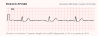

Neurologia · 75 min · ILAE, AAN/AES, ACEP 2024, NCS, NICE e PCDT · monografia
Primeira crise no adulto, definição e classificação da ILAE, estado de mal convulsivo, refratário e não convulsivo, escolha do anticonvulsivante, mulher e gestação, idoso, suspensão, cirurgia, crise psicogênica, síncope e direção veicular, segundo AAN/AES, ACEP 2024, AES 2016, ESETT, Neurocritical Care Society, NICE NG217, CONTRAN 927/2022, ABRAMET 2025 e o PCDT.
Crise epiléptica é o evento transitório causado por atividade neuronal anormal, excessiva ou síncrona; epilepsia é a predisposição duradoura a gerar crises. Pode haver crise sem epilepsia, e epilepsia após uma única crise. A definição operacional da ILAE de 2014, adotada pelo PCDT, exige uma de três condições:
| Critério | O que significa na prática |
|---|---|
| Duas crises não provocadas (ou reflexas) com intervalo maior que 24 horas | Crises no mesmo dia contam como um evento |
| Uma crise não provocada e probabilidade de novas crises semelhante ao risco geral de recorrência após duas crises, pelo menos 60% nos 10 anos seguintes | Ex.: crise tardia após AVC ou com eletroencefalograma epileptiforme |
| Diagnóstico de síndrome epiléptica | Ex.: epilepsia mioclônica juvenil |
Epilepsia resolvida: síndrome dependente da idade já ultrapassada, ou 10 anos sem crises e pelo menos 5 sem anticonvulsivante. Não é sinônimo de cura, mas libera qualquer categoria de habilitação na diretriz de tráfego.
Ocorre junto de uma agressão sistêmica ou em estreita relação temporal com lesão cerebral. A ILAE (Beghi e colaboradores, 2010) fixou as janelas: até 1 semana após AVC, trauma cranioencefálico, encefalopatia anóxica ou neurocirurgia; na primeira identificação de hematoma subdural; durante infecção ativa do sistema nervoso central ou doença autoimune ativa; distúrbio metabólico grave documentado em até 24 horas; intoxicação, abstinência ou fármaco epileptogênico.
Crise provocada não conta para epilepsia e em geral não pede anticonvulsivante crônico: trata-se a causa. E a mesma lesão muda de categoria com o tempo: a crise no terceiro dia do AVC é sintomática aguda; três meses depois, na cicatriz, é não provocada, de alto risco, e costuma bastar para o diagnóstico de epilepsia.
A classificação de 2017 organizou o diagnóstico em tipo de crise, tipo de epilepsia (focal, generalizada, combinada, desconhecida) e síndrome, com a etiologia ao lado (estrutural, genética, infecciosa, metabólica, imune, desconhecida). As mudanças de vocabulário ainda caem em prova:
Em 2025 a ILAE publicou a atualização (Beniczky e colaboradores). Ela mantém quatro classes principais e chega a 21 tipos de crise:
| Classe | Como se subdivide em 2025 | Implicação clínica |
|---|---|---|
| Focal | Pelo estado de consciência: preservada ou comprometida, aferida por percepção e responsividade. Se não se sabe, fica o termo-mãe "crise focal". Pode evoluir para tônico-clônica bilateral | Sugere lesão estrutural; ressonância com protocolo de epilepsia |
| Generalizada | Ausência, tônico-clônica generalizada e "outras generalizadas" (mioclônica, atônica, tônica e outras; a mioclonia negativa entrou como tipo) | Frequentemente genética; fármacos de sódio podem piorar ausência e mioclonia |
| Origem desconhecida | Também pelo estado de consciência | Reclassificar quando surgir testemunha, vídeo ou eletroencefalograma |
| Não classificada | Informação insuficiente para qualquer categoria | Não impede tratar |
A atualização separa classificadores, que mudam o manejo, de descritores da semiologia.
Três perguntas em sequência: foi crise epiléptica (ou síncope, crise psicogênica, AIT)? É provocada? Se não, qual o risco de recorrência? Os exames respondem a essas perguntas.
O NICE NG217 manda considerar o eletroencefalograma em vigília quando se suspeita de epilepsia, para apoiar o diagnóstico e definir tipo de crise e síndrome. Após a primeira crise, idealmente em até 72 horas. Normal não exclui: o eletroencefalograma não deve ser usado para excluir epilepsia; se normal, considerar o de privação de sono e, persistindo a dúvida, o ambulatorial por até 48 horas. O achado epileptiforme é fator de risco nível A de recorrência. O PCDT pede registro de pelo menos 30 minutos e lembra que o diagnóstico é clínico.
A ressonância com protocolo de epilepsia é o exame de escolha para todo adulto com epilepsia, exceto na generalizada idiopática (NICE); tomografia só se a ressonância for contraindicada, e não precisa precedê-la (PCDT). Na emergência, a tomografia responde à pergunta urgente (sangramento, massa, AVC), não à etiológica: esclerose hipocampal e displasia cortical passam despercebidas nela.
A diretriz AAN/AES de 2015 (Krumholz e colaboradores) não diz "trate" nem "não trate": diz o que informar ao adulto com primeira crise não provocada para decidir junto.
| Conclusão da AAN/AES 2015 | Nível |
|---|---|
| O risco de recorrência é maior no início, nos primeiros 2 anos: 21% a 45% | A |
| Aumentam o risco: lesão cerebral prévia como causa (razão de taxas 2,55) e eletroencefalograma com anormalidade epileptiforme (2,16) | A |
| Aumentam o risco: anormalidade significativa na neuroimagem (razão de riscos 2,44) e crise noturna (razão de chances 2,1) | B |
| Tratamento imediato, comparado com esperar a segunda crise, reduz a recorrência nos 2 anos seguintes: redução absoluta de cerca de 35% na metanálise | B |
| A longo prazo (mais de 3 anos), tratamento imediato não melhora a remissão sustentada | B |
| Efeitos adversos dos anticonvulsivantes em 7% a 31%, em geral leves e reversíveis | B |
A revisão Cochrane de 2023 (Neligan e colaboradores, 58 estudos) estimou recorrência de 27% em 6 meses, 36% em 1 ano e 43% em 2 anos, um pouco menor no adulto.
O NICE manda considerar tratar após primeira crise não provocada se houver déficit neurológico, eletroencefalograma com atividade epiléptica inequívoca, anormalidade estrutural na imagem, ou se a pessoa, informada, considerar o risco inaceitável. O PCDT acrescenta: para quem dirige, trabalha ou cuida de pessoas vulneráveis, tratar já é racional.
Na emergência, vale a política clínica do American College of Emergency Physicians de 2024:
| ACEP 2024 | Nível |
|---|---|
| Não é necessário iniciar anticonvulsivante na emergência após uma primeira crise provocada | C |
| Não é necessário iniciar anticonvulsivante na emergência após primeira crise não provocada sem evidência de doença ou lesão cerebral | C |
| Com doença ou lesão cerebral remota, iniciar na emergência ou adiar, em acordo com quem vai seguir | C |
| Não é necessário internar quem teve primeira crise não provocada e voltou ao estado basal | C |
Alta não é abandono: o NICE pede consulta especializada em até 2 semanas, orientação de primeiros socorros e busca de fatores modificáveis (transtorno mental, álcool e drogas, fatores de risco vascular, sepse). E o paciente sai sabendo que não deve dirigir.
flowchart TD A["Primeiro evento
com perda de consciência"] --> B{"Crise epiléptica
provável?"} B -->|"não"| C["Síncope, crise psicogênica,
AIT: investigar a causa"] B -->|"sim"| D["Glicemia, eletrólitos, ECG
tóxicos, imagem se indicada"] D --> E{"Causa aguda
identificada?"} E -->|"sim: provocada"| F["Tratar a causa
sem anticonvulsivante
crônico"] E -->|"não"| G["EEG até 72 h
e RM com protocolo"] G --> H{"Lesão, EEG epileptiforme,
déficit ou crise noturna?"} H -->|"sim"| I["Risco alto: considerar
tratar já"] H -->|"não"| J["Decisão compartilhada
43% recorrem em 2 anos"] I --> K["Orientar direção
e seguimento em 2 semanas"] J --> K
A síncope é a confusão mais comum, porque a hipoperfusão cerebral global produz abalos mioclônicos em boa parte delas: a síncope convulsiva, que não é epilepsia.
| Elemento | Favorece síncope | Favorece crise epiléptica |
|---|---|---|
| Gatilho | Ortostase, calor, dor, micção, tosse; esforço sugere causa cardíaca | Privação de sono, álcool; muitas vezes nenhum |
| Pródromo | Calor, sudorese, náusea, visão escurecendo, zumbido | Aura epigástrica, déjà vu, odor |
| Durante | Palidez; abalos breves, arrítmicos e poucos, começando depois da queda | Cianose; fase tônica e depois clônica; desvio cefálico |
| Língua | Mordedura de ponta, rara | Mordedura lateral, bastante específica |
| Recuperação | Rápida e completa | Confusão pós-ictal, mialgia, paralisia de Todd |
| Incontinência urinária | Ocorre nas duas; não discrimina | |
Evento em esforço ou deitado, palpitação prévia, cardiopatia, morte súbita jovem na família ou eletrocardiograma alterado apontam síncope cardíaca, que segue o caminho da síncope de alto risco.

A definição da ILAE de 2015 (Trinka e colaboradores) tem dois tempos: t1, a partir do qual a crise é atividade contínua e deve ser tratada, e t2, a partir do qual há risco de lesão duradoura. Variam com o tipo de estado de mal.
A Neurocritical Care Society (2012) define estado de mal como 5 minutos ou mais de atividade contínua, clínica ou eletrográfica, ou crises recorrentes sem recuperação entre elas. O limite de 30 minutos caiu porque a maioria das crises tônico-clônicas termina em menos de 2. Com o tempo, receptores GABA-A são internalizados e os de glutamato aumentam na sinapse: o benzodiazepínico perde eficácia minuto a minuto.
No algoritmo da American Epilepsy Society (Glauser e colaboradores, 2016), de 0 a 5 minutos: ABC e exame neurológico, hora de início, oxigênio (intubar se necessário), monitor, glicemia capilar, acesso com eletrólitos, hemograma, toxicológico e nível de anticonvulsivante. Se a glicemia estiver abaixo de 60 mg/dL, no adulto: tiamina 100 mg IV e depois glicose a 50%, 50 mL IV.
Benzodiazepínico é a terapia inicial de escolha (AES, nível A); escolhe-se um dos três:
| Tratamento emergente do estado de mal (Neurocritical Care Society 2012) | Classe |
|---|---|
| Lorazepam | IA |
| Midazolam | IA |
| Diazepam | IIaA |
| Fenitoína ou fosfenitoína, fenobarbital, valproato | IIbA |
| Levetiracetam | IIbC |
No Brasil não há lorazepam endovenoso (Pinto e colaboradores, 2022): sem acesso, midazolam IM; com acesso, diazepam IV, que não difere do lorazepam em eficácia (AES, nível A). O PCDT descreve diazepam 5 a 10 mg, até 20 mg, a 5 mg/min. Decidem o desfecho a rapidez e a dose.
Se a crise continua após benzodiazepínico em dose plena e uma repetição, entra anticonvulsivante endovenoso em dose única de ataque. A AES 2016 não apontou preferência (nível U).
O ESETT (Kapur e colaboradores, NEJM 2019) randomizou, de forma cega, crianças e adultos em estado de mal convulsivo refratário a benzodiazepínico para levetiracetam 60 mg/kg, fosfenitoína 20 mg EF/kg ou valproato 40 mg/kg. Com 384 pacientes, o estudo parou por futilidade: cessação das crises com melhora da consciência em 60 minutos em 47% com levetiracetam, 45% com fosfenitoína e 46% com valproato. Efeitos adversos semelhantes. E 10% dos incluídos tinham crise psicogênica.
| Recomendações atuais sobre a segunda linha | Força |
|---|---|
| ACEP 2024: tratar a crise refratária a benzodiazepínico em dose adequada com agente de segunda linha; fosfenitoína, levetiracetam ou valproato têm eficácia semelhante | Nível A |
| NICE NG217: após duas doses de benzodiazepínico, levetiracetam, fenitoína ou valproato IV; levetiracetam pode ser mais rápido de administrar e ter menos efeitos adversos | NICE 7.1.9 |
| Neurocritical Care Society 2012: controle urgente com valproato | IIaA |
| Neurocritical Care Society 2012: controle urgente com fenitoína ou fosfenitoína | IIaB |
| Neurocritical Care Society 2012: controle urgente com levetiracetam, fenobarbital ou midazolam em infusão | IIb |
As classes de 2012 são anteriores ao ESETT; hoje as três opções são equivalentes e a escolha é pelo paciente: sem fenitoína no cardiopata com bloqueio ou hipotensão, sem valproato na hepatopata ou gestante. O PCDT lista para o SUS fenitoína 18 mg/kg (15 a 20) a até 50 mg/min e fenobarbital 15 mg/kg a 100 mg/min; em 2022, valproato e levetiracetam endovenosos não estavam disponíveis no país, e a lacosamida era a alternativa lembrada.
flowchart TD A["0 a 5 min · ABC, O2, monitor
glicemia; se abaixo de 60:
tiamina e glicose 50%"] --> B["5 a 20 min · benzodiazepínico
midazolam 10 mg IM ou
diazepam 0,15 a 0,2 mg/kg IV"] B --> C{"Parou?"} C -->|"não"| D["Repetir uma vez
a dose IV plena"] D --> E{"Parou?"} E -->|"não"| F["20 a 40 min · segunda linha
levetiracetam 60 mg/kg
ou fosfenitoína 20 mg EF/kg
ou valproato 40 mg/kg"] F --> G{"Parou?"} G -->|"não: refratário"| H["40 min em diante · intubar
midazolam, propofol
ou barbitúrico contínuo"] H --> I["EEG contínuo · UTI
alvo eletrográfico"] C -->|"sim"| J{"Acordou?"} E -->|"sim"| J G -->|"sim"| J J -->|"não"| K["EEG em até 1 hora
afastar estado de mal
não convulsivo"] J -->|"sim"| L["Investigar causa
e manutenção"]
Refratário é o que não responde a benzodiazepínico e segunda linha adequados (31% a 55% dos estabelecidos, na revisão brasileira). Super-refratário (Shorvon e Ferlisi, 2011) continua ou recorre 24 horas ou mais após o início da anestesia, inclusive na retirada dela.
Para a terceira fase, a AES admite que não há evidência clara (nível U): repetir a segunda linha ou dose anestésica, com eletroencefalograma contínuo. A Neurocritical Care Society recomenda infusão contínua (forte, baixa qualidade):
Titular até a cessação das crises eletrográficas ou o surto-supressão (forte, qualidade muito baixa); manter 24 a 48 horas de controle eletrográfico antes da retirada lenta (fraca), já com anticonvulsivante de manutenção; sem eletroencefalograma contínuo, considerar transferência.
No super-refratário não há ensaio controlado. A cetamina, antagonista do receptor NMDA que se multiplica na sinapse, controlou cerca de 57% dos casos numa metanálise de 110 adultos (evidência fraca). A hipotermia não mostrou benefício (HYBERNATUS). Magnésio vale na eclâmpsia; piridoxina, na intoxicação por isoniazida. E é preciso achar a causa: no estado de mal de início novo sem causa aparente, pensar em encefalite autoimune.
É o estado de mal sem componente motor proeminente, em dois cenários: o paciente em coma, muitas vezes após um convulsivo "controlado" (o estado de mal sutil), e o acordado e confuso, com ausência ou crise focal prolongada. Os sinais são pobres: rebaixamento inexplicado, confusão flutuante, afasia, automatismos, nistagmo, mioclonia facial.
| Eletroencefalograma no estado de mal (Neurocritical Care Society 2012) | Classe |
|---|---|
| Crise ou estado de mal recente sem retorno ao basal em mais de 10 minutos (18% a 50% seguem em estado de mal não convulsivo depois que o movimento para) | IB |
| Coma, inclusive após parada cardíaca (crises não convulsivas em 20% a 60%) | IB |
| Atividade epileptiforme ou descargas periódicas nos 30 minutos iniciais de traçado | IB |
| Hemorragia intracraniana, incluindo trauma, hemorragia subaracnóidea e intraparenquimatosa | IB |
| Suspeita de crise não convulsiva em paciente com alteração do estado mental | IB |
| Alvo do tratamento: cessação das crises não convulsivas | IB |
| Alvo do tratamento: surto-supressão ou supressão completa do traçado | IIbC |
O eletroencefalograma contínuo deve começar em até 1 hora da suspeita e durar pelo menos 48 horas no paciente comatoso. Na revisão brasileira, cerca de 14% dos pacientes tratados por estado de mal convulsivo seguem em estado de mal não convulsivo. O diagnóstico eletrográfico usa os critérios de Salzburgo modificados: descargas epileptiformes acima de 2,5 Hz fecham o diagnóstico; descargas até 2,5 Hz, ou atividade delta rítmica acima de 0,5 Hz, exigem um critério secundário (evolução no tempo e no espaço, fenômeno clínico sutil, ou resposta clínica e eletrográfica a anticonvulsivante endovenoso). Na validação, sensibilidade de 98% e especificidade de 90%.
O tratamento começa igual ao convulsivo; depois, no não convulsivo sem coma, o risco do coma anestésico costuma superar o da crise, e somam-se anticonvulsivantes endovenosos em sequência. Em coma, conduz-se como refratário.
Monoterapia, titulação lenta e troca por outra monoterapia antes de associar. O NICE NG217, com as emendas de janeiro de 2025 sobre valproato e topiramato, ordena as opções por tipo de crise:
| Tipo de crise | Primeira linha | Depois | Pode agravar |
|---|---|---|---|
| Focal, com ou sem evolução bilateral | Lamotrigina ou levetiracetam | Carbamazepina, oxcarbazepina, zonisamida; lacosamida como terceira monoterapia | Não se aplica |
| Tônico-clônica generalizada | Lamotrigina, levetiracetam ou valproato, à escolha, respeitando as regras do valproato | Associar clobazam, lamotrigina, levetiracetam, perampanel, valproato ou topiramato | Carbamazepina, oxcarbazepina, fenitoína, gabapentina, pregabalina, tiagabina, vigabatrina; fenobarbital na ausência; lamotrigina na mioclonia |
| Ausência | Etossuximida | Lamotrigina, levetiracetam ou valproato | |
| Mioclônica | Levetiracetam ou valproato | Brivaracetam, clobazam, clonazepam, lamotrigina, topiramato, zonisamida |
O SANAD II (Marson e colaboradores, Lancet 2021) sustenta a tabela. Na focal (990 pacientes), o levetiracetam não foi não inferior à lamotrigina para remissão de 12 meses (razão de riscos 1,18), e por protocolo a lamotrigina superou levetiracetam e zonisamida, com menos reações adversas (33% contra 44% e 45%). Na generalizada ou inclassificável (520), o levetiracetam não foi não inferior ao valproato (1,19). Em resumo: lamotrigina é a referência na focal e valproato é o mais eficaz na generalizada, o que dá custo real a evitá-lo na mulher em idade fértil.
O PCDT disponibiliza no SUS ácido valproico, carbamazepina, clobazam, clonazepam, etossuximida, fenitoína, fenobarbital, gabapentina, lamotrigina, levetiracetam, primidona, topiramato e vigabatrina.
| Fármaco | O que o clínico precisa vigiar |
|---|---|
| Carbamazepina, oxcarbazepina | Hiponatremia (mais com oxcarbazepina), exantema, SJS/NET, leucopenia, indução enzimática (carbamazepina); piora de ausência e mioclonia |
| Fenitoína | Cinética saturável, ataxia e nistagmo, hiperplasia gengival, osteomalácia, indução enzimática |
| Valproato | Hepatotoxicidade, hiperamonemia, pancreatite, plaquetopenia, ganho de peso, ovários policísticos, teratogenicidade; eleva a lamotrigina |
| Lamotrigina | Exantema e SJS, sobretudo com titulação rápida ou com valproato: iniciar com 25 mg/dia por 2 semanas e 50 mg/dia por mais 2 (PCDT); com valproato, 25 mg em dias alternados |
| Levetiracetam | Irritabilidade, agressividade, depressão; ajuste renal |
| Topiramato | Lentificação cognitiva, nefrolitíase, acidose metabólica, glaucoma agudo, perda de peso; teratogênico |
| Fenobarbital, primidona | Sedação, prejuízo cognitivo, dependência, indução enzimática, osteomalácia |
Os indutores enzimáticos (carbamazepina, fenitoína, fenobarbital, primidona; oxcarbazepina e topiramato em menor grau) reduzem o efeito de contraceptivo hormonal (até 50% no nível, segundo o PCDT), varfarina, anticoagulantes diretos, antirretrovirais e imunossupressores. No sentido inverso, estrogênio reduz o nível de lamotrigina (NICE): crise nova em quem começou pílula. Carbamazepina, fenitoína, primidona e valproato reduzem a densidade óssea; suplementar quem está em risco.
O registro EURAP (Tomson e colaboradores, Lancet Neurology 2018; 7.355 gestações em monoterapia) deu a escala de risco de malformação congênita maior que orienta a escolha:
| Monoterapia na concepção | Malformação maior |
|---|---|
| Valproato | 10,3% |
| Fenobarbital | 6,5% |
| Fenitoína | 6,4% |
| Carbamazepina | 5,5% |
| Topiramato | 3,9% |
| Oxcarbazepina | 3,0% |
| Lamotrigina | 2,9% |
| Levetiracetam | 2,8% |
O risco sobe com a dose de valproato, carbamazepina, lamotrigina e fenobarbital; valproato até 650 mg/dia já superou o levetiracetam. Além da malformação (espinha bífida, fenda palatina, cardiopatia, craniossinostose), o valproato prejudica o neurodesenvolvimento: a agência britânica informa risco de cerca de 10% de malformação e 30% a 40% de transtornos do neurodesenvolvimento, incluindo autismo e queda de QI.
O resto é planejamento: trocar o fármaco bem antes da concepção, monoterapia na menor dose eficaz, ácido fólico antes de engravidar. A gestante não deve suspender o anticonvulsivante por conta própria: a crise tônico-clônica é mais perigosa para o feto que o fármaco bem escolhido. O nível de lamotrigina cai na gestação; o NICE sugere nível basal pré-concepcional, monitorização com ajuste durante a gravidez e retorno à dose anterior logo após o parto. Amamentar é seguro para a maioria.
Janela terapêutica estreita, efeito cognitivo e de marcha, osteoporose e polifarmácia. O ensaio do Veterans Affairs (Rowan e colaboradores, 2005; 593 pacientes, idade média de 72 anos, infarto cerebral como causa mais comum) comparou lamotrigina 150 mg, gabapentina 1.500 mg e carbamazepina 600 mg por dia: o controle de crises foi igual, mas a descontinuação por efeito adverso foi de 12,1% com lamotrigina, 21,6% com gabapentina e 31% com carbamazepina. O PCDT manda evitar carbamazepina, fenitoína e fenobarbital no idoso e escalonar mais devagar, com dose menor; o NICE, atenção a interações. Na prática, lamotrigina ou levetiracetam em dose baixa.
Após 2 anos sem crises, o NICE pede avaliação individual do risco de recorrência com a retirada, discutindo morte súbita e direção. Se retirar: um fármaco de cada vez, redução gradual ao longo de pelo menos 3 meses (mais lenta para benzodiazepínicos e barbitúricos) e, se a crise voltar, desfazer a última redução. A atualização da AAN de 2021 (Gloss e colaboradores) estimou recorrência de longo prazo de 15% em quem retira contra 7% em quem mantém, no adulto livre de crises há 2 anos (um estudo classe I), sem aumento aparente de estado de mal.
Favorecem a recorrência lesão estrutural, crise focal e eletroencefalograma alterado. Na epilepsia mioclônica juvenil, a recorrência após retirada passa de 90% (PCDT): tratamento de longo prazo.
A ILAE (Kwan e colaboradores, 2010) define epilepsia farmacorresistente como a falha de dois esquemas de anticonvulsivante tolerados, adequadamente escolhidos e usados, em monoterapia ou associação, em obter liberdade sustentada de crises. Na coorte citada pelo PCDT, 47% ficaram livres de crises com o primeiro fármaco, 13% com o segundo e 3% com a associação. Antes, afastar a pseudorrefratariedade: diagnóstico errado (20% a 30% dos encaminhados a centros não têm crise epiléptica, segundo o PCDT), fármaco errado, dose baixa, má adesão, álcool.
Farmacorresistência pede centro terciário em até 4 semanas (NICE). Os ensaios que sustentam a cirurgia são do lobo temporal:
O PCDT lista as situações em que a cirurgia supera claramente o tratamento clínico e que merecem pelo menos avaliação pré-cirúrgica: epilepsia do lobo temporal com esclerose hipocampal, hamartoma hipotalâmico, tumores glioneurais, displasia cortical focal e angioma cavernoso. Quando não há foco ressecável, entram estimulação do nervo vago, dieta cetogênica e associações de segunda linha, como o cenobamato na crise focal (NICE). A demora é a regra e custa anos de crises, perda de emprego e de habilitação.
Transtorno funcional (dissociativo), não simulação, frequente no pronto-socorro: 10% do "estado de mal refratário" do ESETT. O erro custa anos de anticonvulsivante inútil e intubações; e as duas condições podem coexistir.
O diagnóstico de certeza, pelos critérios mínimos da ILAE (LaFrance e colaboradores, 2013), é o evento típico registrado em vídeo-eletroencefalograma, sem atividade epileptiforme antes, durante ou depois. O tratamento começa com a comunicação do diagnóstico como condição real e tratável e segue com psicoterapia. No CODES (Goldstein e colaboradores, 2020), a terapia cognitivo-comportamental somada ao cuidado padrão não reduziu a frequência mensal de crises em 12 meses, mas melhorou desfechos secundários.
O exame de aptidão para a habilitação segue a Resolução CONTRAN nº 927/2022. Quem declara epilepsia ou uso de anticonvulsivante traz relatório padronizado do médico assistente que o acompanha há pelo menos um ano. Os anexos exigem, para quem usa anticonvulsivante, um ano sem crises, parecer favorável e plena adesão; para quem está em retirada, não ter epilepsia mioclônica juvenil, dois anos sem crises, retirada de pelo menos seis meses e seis meses sem crises depois dela. Aprovado, o condutor fica restrito à categoria B.
A diretriz ABRAMET 2025, com a Associação Brasileira de Epilepsia e a Academia Brasileira de Neurologia, detalhou os critérios por categoria e por atividade remunerada:
| Situação | Aptidão (ABRAMET 2025) |
|---|---|
| Crise única não provocada, sem critério de epilepsia | Inapto por 12 meses em qualquer categoria; por 2 anos na B com atividade remunerada; por 5 anos em ACC, A, C, D e E |
| Epilepsia em uso de anticonvulsivante | Só categoria B: 1 ano sem crises sem atividade remunerada; 5 anos com atividade remunerada |
| Epilepsia sem anticonvulsivante | Só categoria B, sem atividade remunerada, após 2 anos contínuos sem crises depois da retirada; não vale para epilepsia generalizada idiopática |
| Epilepsia resolvida (10 anos sem crises, 5 sem fármaco) | Qualquer categoria, inclusive profissional |
| Crises exclusivamente no sono | Só B sem atividade remunerada, nunca crise em vigília, 5 anos de diagnóstico, restrição de dirigir após o pôr do sol, sonolência diurna e apneia afastadas |
| Redução ou troca de fármaco | Sem crises desde a última mudança: 6 meses na B sem atividade remunerada, 24 meses com ela; inapto nas demais |
O PCDT ainda cita a Resolução 425/2012, já substituída. Ao clínico cabe orientar e registrar: crise recente, sem direção até a avaliação.